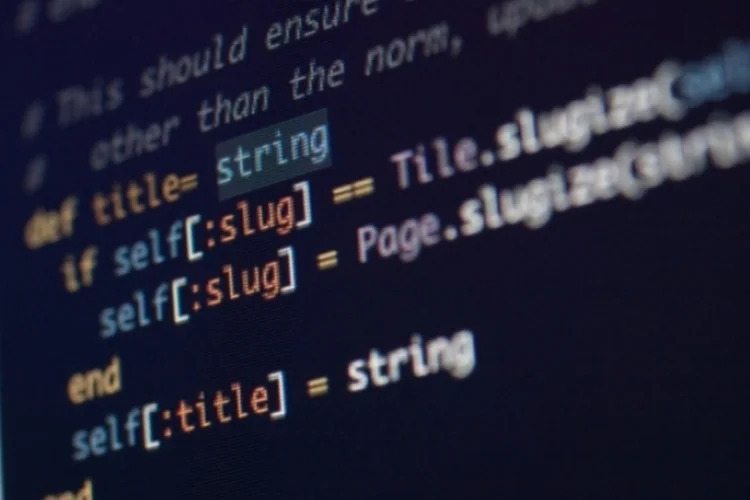

As 5 linguagens de programação mais usadas no mundo, segundo o GitHub
Ranking aponta o Brasil como uma das comunidades de desenvolvedores de software que mais cresce no mundo

A plataforma de hospedagem de código-fonte GitHub, onde programadores comumente postam seus portfólios, divulgou nesta terça-feira,18, o relatório anual Octoverse de 2021, que analisa o desenvolvimento do mercado de progração e as linguagens mais utilizadas pela comunidade de desenvolvedores no Brasil e no mundo.
Segundo o GitHub, embora o mercado sul-americano tenha contribuído com apenas 6% do número total de programadores em todo o mundo, em comparação com a América do Norte e Ásia que, juntas, tiveram 60% dos desenvolvedores de software contribuindo com código, esta região foi a que mais cresceu em comparação com o ano anterior. O Brasil, em particular, é uma das comunidades de desenvolvedores de software contribuindo com código, esta região foi a que mais cresceu em comparação com o ano anterior. O Brasil, em particular, é uma das comunidades de desenvolvedores de software que mais cresce no mundo, com um crescimento anual de 40% no total de usuários.
Veja também
No país as linguagens que mais crescem ano a ano, classificadas em ordem, foram: Javascript, Sass CSS, Blade, Linguagem de configuração HashiCorp, Elixir, Typescript, Kotlin, Go, Lua e Python. A popularidade de Javascript e Sass CSS no Brasil foi semelhante ao crescimento de ambas as linguagens globalmente, enquanto o aumento do uso da Blade e da linguagem de configuração Hashicorp foi mais específico para o Brasil.
| Brasil: | Mundo: |
|---|---|
| JavaScript | JavaScript |
| Sass CSS | Python |
| Blade | Java |
| HCL | TypeScript |
| Elixir | C# |
Confira quais são as tendências e o que elas significam para o mercado nacional:
#1 - Javascript
JavaScript é uma linguagem de programação universal, multiplataforma e segue sendo a linguagem mais popular no mundo inteiro nos últimos sete anos. A universalidade do JavaScript a torna especialmente procurada para aplicativos de machine learning e inteligência artificial. Ela também permite um tempo de desenvolvimento rápido, fornecendo um loop interativo para facilitar a depuração em uma estrutura de desenvolvimento sólida.
#2 - Sass CSS
Uma linguagem de extensão do CSS, a Syntactically Awesome Style Sheets (SASS), em tradução livre “folhas de estilo com uma sintaxe incrível”, tem ganhado popularidade desde a sua criação em 2006. A SASS visa tornar o processo de desenvolvimento mais simples e mais eficiente, mantendo a mesma lógica do CSS (seletores, regras etc), mas de uma maneira mais organizada, intuitiva e com trechos de código facilmente reutilizáveis.
#3 - Blade
A terceira linguagem mais popular no Brasil é a Blade, conhecida por aumentar a produtividade, a velocidade de codificação e a facilidade de leitura do código. É uma linguagem que enfatiza o algoritmo, por isso tem um conjunto de sintaxe bem pequeno, mas poderoso. Por ser simples, rápida e dinâmica, permite desenvolver aplicações complexas rapidamente.
#4 - HashiCorp Configuration Language (HCL)
A HashiCorp Configuration Language (HCL) é de configuração exclusiva, projetada para ser usada com ferramentas HashiCorp. Hoje, a HCL se expandiu e já é classificada como um kit de ferramentas para a criação de linguagens de programação estruturadas. Embora pretenda ser útil para finalidades gerais, e na criação de linguagens que sejam amigáveis tanto para pessoas quanto para máquinas, para uso com ferramentas de linha de comando, é voltada principalmente para ferramentas de desenvolvimento, servidores, etc.
#5 - Elixir
A Elixir surgiu em 2014 e é uma linguagem de programação brasileira que tem sido adotada por cada vez mais desenvolvedores ao redor do mundo. É uma linguagem de código aberto que é executada na Máquina Virtual Erlang (Erlang VM), cujo principal objetivo é oferecer uma programação produtiva para aplicações distribuídas seguras e de fácil manutenção, potencializando os recursos da máquina virtual sobre a qual está fundada sem custos de performance.